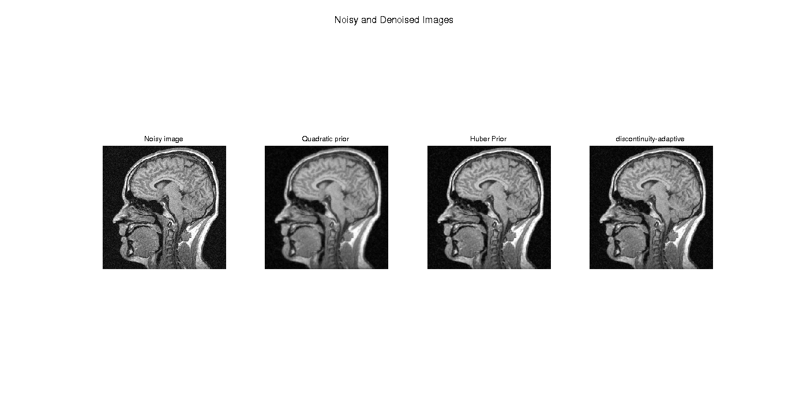
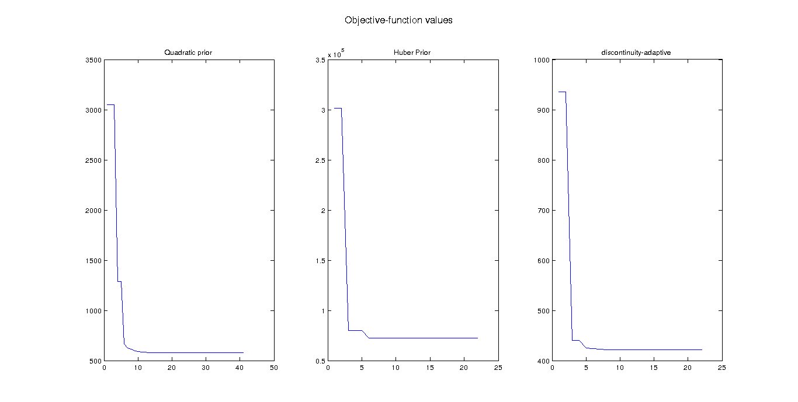

Contents
Q2
close all
clear all
clc
Loading data
img_data = load('../data/assignmentImageDenoisingBrainNoisy.mat');
img_noisy = img_data.imageNoisy;
sd = noiseLevel(img_noisy);
display(sd);
sd =
0.0613
Gradient descent
Quadratic prior
alpha_opt = 0.5;
alpha = alpha_opt;
step = 1;
img_curr = img_noisy;
stop = 1e-6;
val_curr = icm_objfn(img_noisy,img_curr,'quad',alpha,1);
obj_quad1 = [val_curr];
while(step>stop)
img_grad = icm_grad(img_noisy,img_curr,'quad',alpha,1);
img_upd = img_curr - step*img_grad;
val_upd = icm_objfn(img_noisy,img_upd,'quad',alpha,1);
if(val_upd<val_curr)
img_curr = img_upd;
val_curr = val_upd;
step = 1.1*step;
else
step = 0.5*step;
end
obj_quad1 = [obj_quad1 val_curr];
end
img_denoised1 = img_curr;
display(alpha_opt);
alpha_opt =
0.5000
Huber prior
alpha_opt = 0.4;
alpha = alpha_opt;
gamma_opt = 0.3;
gamma_param = gamma_opt;
step = 1;
img_curr = img_noisy;
val_curr = icm_objfn(img_noisy,img_curr,'huber',alpha,gamma_param);
obj_quad2 = [val_curr];
iter = 0;
while(iter<=20)
img_grad = icm_grad(img_noisy,img_curr,'huber',alpha, gamma_param);
img_upd = img_curr - step*img_grad;
val_upd = icm_objfn(img_noisy,img_upd,'huber',alpha,gamma_param);
fprintf('alpha = %.3f, gamma = %.3f, Value of current obj fn = %.5f, possible obj fn = %.5f\n', alpha, gamma_param, val_curr, val_upd);
if(val_upd<val_curr)
img_curr = img_upd;
val_curr = val_upd;
step = 1.1*step;
else
step = 0.5*step;
end
iter = iter + 1;
obj_quad2 = [obj_quad2 val_curr];
end
img_denoised2 = img_curr;
display(alpha_opt);
display(gamma_opt);
alpha = 0.400, gamma = 0.300, Value of current obj fn = 301475.05073, possible obj fn = 318554.24039
alpha = 0.400, gamma = 0.300, Value of current obj fn = 301475.05073, possible obj fn = 80191.93774
alpha = 0.400, gamma = 0.300, Value of current obj fn = 80191.93774, possible obj fn = 190742.69590
alpha = 0.400, gamma = 0.300, Value of current obj fn = 80191.93774, possible obj fn = 88323.44675
alpha = 0.400, gamma = 0.300, Value of current obj fn = 80191.93774, possible obj fn = 72444.56427
alpha = 0.400, gamma = 0.300, Value of current obj fn = 72444.56427, possible obj fn = 77983.31708
alpha = 0.400, gamma = 0.300, Value of current obj fn = 72444.56427, possible obj fn = 74437.92214
alpha = 0.400, gamma = 0.300, Value of current obj fn = 72444.56427, possible obj fn = 73246.68624
alpha = 0.400, gamma = 0.300, Value of current obj fn = 72444.56427, possible obj fn = 72797.03398
alpha = 0.400, gamma = 0.300, Value of current obj fn = 72444.56427, possible obj fn = 72608.60247
alpha = 0.400, gamma = 0.300, Value of current obj fn = 72444.56427, possible obj fn = 72524.05083
alpha = 0.400, gamma = 0.300, Value of current obj fn = 72444.56427, possible obj fn = 72484.04442
alpha = 0.400, gamma = 0.300, Value of current obj fn = 72444.56427, possible obj fn = 72464.18404
alpha = 0.400, gamma = 0.300, Value of current obj fn = 72444.56427, possible obj fn = 72454.04560
alpha = 0.400, gamma = 0.300, Value of current obj fn = 72444.56427, possible obj fn = 72449.29312
alpha = 0.400, gamma = 0.300, Value of current obj fn = 72444.56427, possible obj fn = 72446.92574
alpha = 0.400, gamma = 0.300, Value of current obj fn = 72444.56427, possible obj fn = 72445.74427
alpha = 0.400, gamma = 0.300, Value of current obj fn = 72444.56427, possible obj fn = 72445.15408
alpha = 0.400, gamma = 0.300, Value of current obj fn = 72444.56427, possible obj fn = 72444.85913
alpha = 0.400, gamma = 0.300, Value of current obj fn = 72444.56427, possible obj fn = 72444.71169
alpha = 0.400, gamma = 0.300, Value of current obj fn = 72444.56427, possible obj fn = 72444.63798
alpha_opt =
0.4000
gamma_opt =
0.3000
Discontinuity-adaptive prior
alpha_opt = 0.4;
alpha = alpha_opt;
gamma_opt = 0.5;
gamma_param = gamma_opt;
step = 1;
img_curr = img_noisy;
stop = 1e-5;
val_curr = icm_objfn(img_noisy,img_curr,'log',alpha,gamma_param);
obj_quad3 = [val_curr];
iter = 0;
while(iter<=20)
img_grad = icm_grad(img_noisy,img_curr,'log',alpha, gamma_param);
img_upd = img_curr - step*img_grad;
val_upd = icm_objfn(img_noisy,img_upd,'log',alpha,gamma_param);
fprintf('alpha = %.3f, gamma = %.3f, Value of current obj fn = %.5f, possible obj fn = %.5f\n', alpha, gamma_param, val_curr, val_upd);
if(val_upd<val_curr)
img_curr = img_upd;
val_curr = val_upd;
step = 1.1*step;
else
step = 0.5*step;
end
iter = iter + 1;
obj_quad3 = [obj_quad3 val_curr];
end
img_denoised3 = img_curr;
display(alpha_opt);
display(gamma_opt);
figure(1)
h(1) = subplot(1,4,1);
imshow(abs(img_noisy),[0,1]);
title('Noisy image');
h(2) = subplot(1,4,2);
imshow(abs(img_denoised1),[0,1]);
title('Quadratic prior');
h(3) = subplot(1,4,3);
imshow(abs(img_denoised2),[0,1]);
title('Huber Prior');
h(4) = subplot(1,4,4);
imshow(abs(img_denoised3),[0,1]);
title('discontinuity-adaptive');
suptitle('Noisy and Denoised Images');
pause(5);
display('All the four images are on same colormap');
figure(2)
h(1) = subplot(1,3,1);
plot(obj_quad1);
title('Quadratic prior');
h(2) = subplot(1,3,2);
plot(obj_quad2);
title('Huber Prior');
h(3) = subplot(1,3,3);
plot(obj_quad3);
title('discontinuity-adaptive');
suptitle('Objective-function values');
alpha = 0.400, gamma = 0.500, Value of current obj fn = 935.02576, possible obj fn = 1067.96421
alpha = 0.400, gamma = 0.500, Value of current obj fn = 935.02576, possible obj fn = 440.04132
alpha = 0.400, gamma = 0.500, Value of current obj fn = 440.04132, possible obj fn = 503.31189
alpha = 0.400, gamma = 0.500, Value of current obj fn = 440.04132, possible obj fn = 424.65377
alpha = 0.400, gamma = 0.500, Value of current obj fn = 424.65377, possible obj fn = 423.95420
alpha = 0.400, gamma = 0.500, Value of current obj fn = 423.95420, possible obj fn = 422.80045
alpha = 0.400, gamma = 0.500, Value of current obj fn = 422.80045, possible obj fn = 421.84146
alpha = 0.400, gamma = 0.500, Value of current obj fn = 421.84146, possible obj fn = 421.38613
alpha = 0.400, gamma = 0.500, Value of current obj fn = 421.38613, possible obj fn = 421.15995
alpha = 0.400, gamma = 0.500, Value of current obj fn = 421.15995, possible obj fn = 421.08667
alpha = 0.400, gamma = 0.500, Value of current obj fn = 421.08667, possible obj fn = 421.04699
alpha = 0.400, gamma = 0.500, Value of current obj fn = 421.04699, possible obj fn = 421.05175
alpha = 0.400, gamma = 0.500, Value of current obj fn = 421.04699, possible obj fn = 421.04934
alpha = 0.400, gamma = 0.500, Value of current obj fn = 421.04699, possible obj fn = 421.04816
alpha = 0.400, gamma = 0.500, Value of current obj fn = 421.04699, possible obj fn = 421.04757
alpha = 0.400, gamma = 0.500, Value of current obj fn = 421.04699, possible obj fn = 421.04728
alpha = 0.400, gamma = 0.500, Value of current obj fn = 421.04699, possible obj fn = 421.04713
alpha = 0.400, gamma = 0.500, Value of current obj fn = 421.04699, possible obj fn = 421.04706
alpha = 0.400, gamma = 0.500, Value of current obj fn = 421.04699, possible obj fn = 421.04702
alpha = 0.400, gamma = 0.500, Value of current obj fn = 421.04699, possible obj fn = 421.04701
alpha = 0.400, gamma = 0.500, Value of current obj fn = 421.04699, possible obj fn = 421.04700
alpha_opt =
0.4000
gamma_opt =
0.5000
All the four images are on same colormap
 